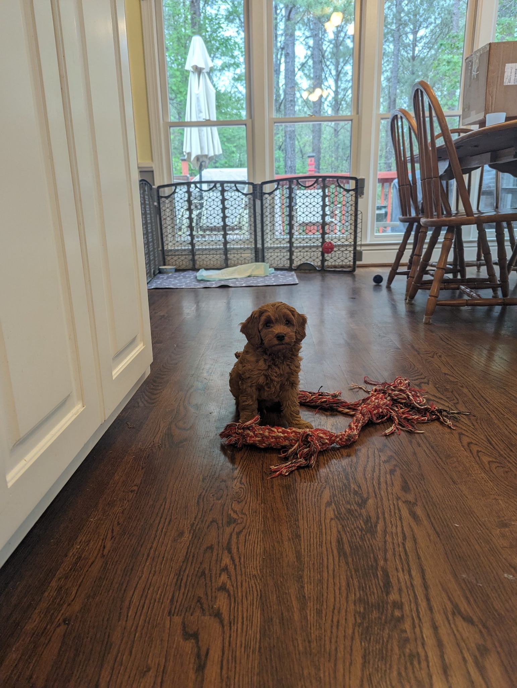

Raised in Our Home
Puppies are introduced to everyday family life, gentle handling, and a loving home environment.
Cavapoos in Georgia
Welcome to Georgia Cavapoos. We're so glad you're here. Choosing a puppy is an important decision, and we're honored you're considering our program.

Welcome
Our goal is to raise Cavapoos who are healthy, affectionate, confident, and ready to become cherished family companions.
Every detail matters—from the parent dogs we choose to the way each puppy is loved, handled, and prepared for life with their future family.
Our Promise
We want families to feel confident, informed, and cared for from the first message to go-home day and beyond.
Puppies are introduced to everyday family life, gentle handling, and a loving home environment.
We prioritize thoughtful pairings, veterinary care, and healthy beginnings for every puppy.
We value sweet, affectionate, family-friendly personalities just as much as beautiful coats.
Our relationship doesn't end on go-home day. We want families to feel prepared and supported.

Home-Raised Puppies
We want future families to feel confident about where their puppy comes from. Our puppies are cared for in a home environment and given the attention, gentleness, and early experiences that help them grow into beloved companions.
Learn More About Us →Meet the Parents
Our parent dogs are the heart of Georgia Cavapoos. Each one is chosen with care for health, temperament, structure, and the loving personality families hope for in a Cavapoo.
Meet Our Dogs →
Upcoming Litters
We don't currently have puppies available. We are accepting applications for upcoming litters and would love to connect with families interested in welcoming a future Georgia Cavapoo into their home.
Join Our WaitlistKind Words
Questions
Complete our puppy application and tell us about your home, lifestyle, and what you're looking for in a Cavapoo. We'll review your application and follow up with next steps.
We do not currently have puppies available. Families may apply for upcoming litters so we can stay connected as future plans are made.
Puppies go home once they are developmentally ready and have received appropriate veterinary care. Exact timing depends on the litter and will be shared with approved families.
Whether you're just beginning your search or ready to join our waitlist, we'd love the opportunity to get to know you.
Join Our Waitlist